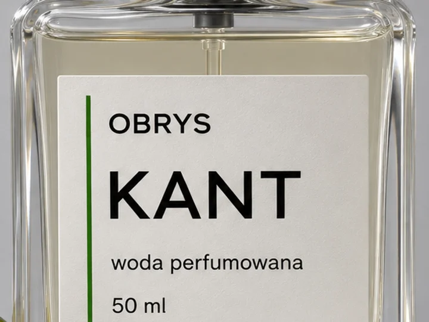

Ciepło bez deserowej słodyczy
Drzewno-ambrowy kierunek dla osób, które lubią ciepłe kompozycje, ale nie szukają deserowych skojarzeń.
OBRYS / KANT / WODA PERFUMOWANA UNISEX

KANT łączy cierpką zieloną mandarynkę z suchym drewnem i ciepłym, ambrowym tłem. Woda perfumowana unisex dla miłośników świeżych, drzewnych kompozycji.
50 ml 249 zł
POZNAJ KOMPOZYCJĘ
Od cierpkiej skórki owocu po suche, ciepłe drewno. Wybierz etap i poznaj jego charakter.
CIERPKO / ŚWIEŻO / KORZENNIE
Jak świeżo przełamana skórka owocu. Zielony, cierpki początek z chłodnym, korzennym akcentem kardamonu.
SUCHO / DRZEWNIE / HERBACIANIE
Cytrusowa świeżość ustępuje suchemu drewnu. Czarna herbata dodaje lekko cierpkiej głębi, bez deserowych skojarzeń.
CIEPŁO / SUCHO / ZIEMIŚCIE
Ciepłe, suche tło z ziemistym akcentem wetywerii domyka kompozycję. To zamierzona baza zapachu.
Opis nut przedstawia charakter kompozycji, nie wykaz składników.
CYTRUSY Z DRZEWNYM AKCENTEM
Drzewno-ambrowy kierunek dla osób, które lubią ciepłe kompozycje, ale nie szukają deserowych skojarzeń.
Zielona mandarynka i suche drewno, bez podziału na zapachy damskie i męskie.
Jeśli lubisz zapach przełamanej skórki cytrusa, zielona mandarynka i chłodny kardamon mogą trafić w Twój gust.
Szukasz przede wszystkim słodkich, deserowych akordów? KANT zmierza w innym kierunku.

IDEA OBRYS
Światło wydobywające krawędź drewnianego stołu stało się punktem wyjścia dla OBRYS. KANT przekłada ten obraz na kontrast cierpkiej zielonej mandarynki i suchego, ciepłego drewna. Zielona linia na etykiecie jest znakiem tego spotkania.

Zielona linia na matowej etykiecie nawiązuje do cierpkiej skórki mandarynki. Ten sam motyw łączy flakon, pudełko i próbkę.
JEDEN ZNAK. PROSTA FORMA.
Przezroczyste szkło, jasny płyn i grafitowy korek. Oszczędne opakowanie skupia uwagę na charakterze kompozycji.
WYBIERZ KANT
KANT — WODA PERFUMOWANA
Woda perfumowana unisex
Zielona mandarynka.
Suche drewno.
Ciepłe, ambrowe tło.
W zestawie: szklany flakon z atomizerem, korkiem i pudełkiem.
249 zł50 ml · 4,98 zł/ml
Próbka KANT 2 ml z atomizerem i nasadką. Ta sama woda perfumowana, w mniejszej pojemności.
19 zł9,50 zł/ml
Dostawa 0 zł przy każdej wartości koszyka.
PYTANIA PRZED WYBOREM
Cierpka zielona mandarynka i kardamon otwierają kompozycję. Dalej pojawiają się cedr i czarna herbata, a w bazie suchy akord ambrowy oraz wetyweria.
KANT ma suchy, drzewno-ambrowy kierunek z cierpkim otwarciem, bez deserowych skojarzeń. Odbiór zapachu jest indywidualny.
Zapach nie jest przypisany do płci. Wybierasz go według własnego gustu.
50 ml wody perfumowanej KANT w szklanym flakonie z atomizerem, korkiem i pudełkiem. Próbka jest osobnym wariantem oferty.
W ofercie jest próbka 2 ml za 19 zł, z atomizerem i nasadką. Pozwala poznać zapach przed wyborem flakonu. Oceń pierwsze wrażenie. Wróć do zapachu później i sprawdź, jak się zmienił. Porównaj odczucia w zwykłym dniu.
Nie mamy jeszcze potwierdzonych wyników testów trwałości ani projekcji. Nie deklarujemy liczby godzin.
Dodaj produkty do koszyka, sprawdź podsumowanie i wybierz „Złóż zamówienie”.
OBRYS / KANT
Woda perfumowana unisex · 50 ml · 249 zł